1.阅读理解
1.1 什么是RC?
阅读理解是近两年自然语言处理领域的研究热点之一,受到学术界和工业界的广泛关注.而阅读理解,即指让机器阅读文本,然后根据文本回答问题,对机器的文本理解能力、推理能力甚至一些人类常识都有一定的要求.
1.2 为什么是RC?
教机器去理解人类语言是一个很难的事情,那我们为什么会选择去做阅读理解任务?
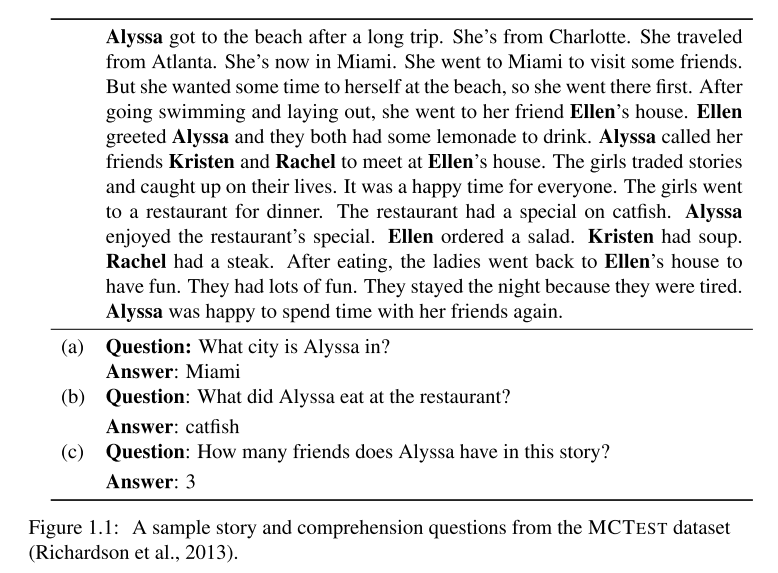
其实,NLP社区为了解决语言理解问题已经设计并考虑了很多任务:
- 词性标注:如Alyssa got to the beach after a long trip, Alyssa是专有名词, got是过去式动词, long是形容词, after是介词等等.
- 命名实体识别: 需要知道例如Alyssa, Ellen, Kristen是人名; Charlotte, Atlanta and Miami是地名等等.
- 句法分析: Alyssa got to the beach after a long trip 中Alyssa是主语, beach是go的目标, after a long trip是修饰动词的介词短语等等.
- 指代消解: 需要去理解She,he一类词的指代对象.
然后人们发现,阅读理解,阅读文章并回答问题,能够有效的考察这些方面考察机器对人类语言的理解.
(a) 第一个问题What city is Alyssa in? ,机器需挑出She’s now in Miami并知道She指的是Alyssa
(b) 第二个问题What did Alyssa eat at the restaurant? 机器需要挑出The restaurant had a special on catfish. 和 Alyssa enjoyed the restaurant’s special这两个句子并且知道special指的是catfish.
(c) 第三个问题How many friends does Alyssa have in this story? 就更有挑战性,机器需要追踪文中所有的人名并分析它们的关系,需要很强的理解推理能力.
所以, 阅读理解任务可能是最适合评估机器对文本理解能力的任务.
并且,阅读理解在人类的生活,实际应用中能起到很大的作用.
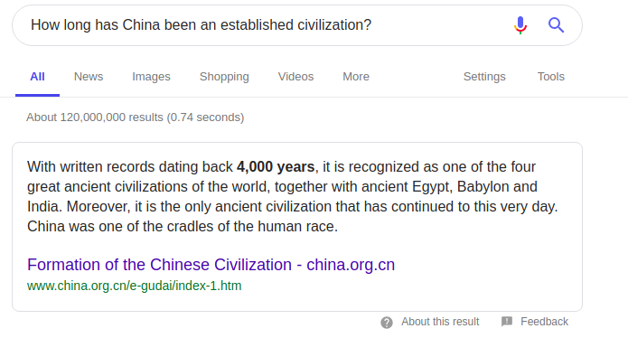
例如使用搜索引擎搜索问题时, 利用阅读理解技术,我们可以直接返回给用户答案而不仅是检索出来的网页.而且,现在常用的语言助手例如Amazon的Alexa, Apple的siri等语音助手, 人们也经常使用他们来问一些常识性的或者信息类的问题, 而阅读理解技术无疑于是对话和问答中的关键.
结合阅读理解技术为关键发展出很多应用,Danqi Chen的博士论文中提出了下面两类:
- 开放领域问答: 结合信息检索技术和阅读理解技术来回答一些通识性问题.
- 对话式问答: 结合对话领域和问答领域的挑战, 把一轮的问答转变为关于一段文本的对话式问题.
总而言之, 阅读理解的主要应用场景集中在机器对非结构化文本内容的阅读和理解上.
1.3 阅读理解问题的分类
1.3.1 Cloze-style(完形填空式)
CBT数据集全称是Children’s Book Test,数据集是facebook从儿童读物中自动生成的,每21句话构成一个example,前20句是用于阅读的上下文,第21句会被抽走一个单词,机器要从给定的十个词中去预测哪个词才是被抽走的词,根据被抽走的词可以将问题分成四类：命名实体、名词、动词和介词.
更详细的关于数据集的介绍请查看下面一篇论文:
Felix Hill, Antoine Bordes, Sumit Chopra and Jason Weston. The Goldilocks Principle: Reading Children’s Books with Explicit Memory Representations, arXiv:1511.02301.
一个example:
1 | Context: |
- 其他的还有如CNN/Daily Mail 数据集,由DeepMind从真实的新闻数据中自动标注得到的,具体细节查看网页链接.
1.3.2 多选式
多选式阅读理解非常好理解,和我们中学做过的英语阅读一样,给一篇文章阅读,然后回答关于这篇文章的选择题.
一个example:
1 | James the Turtle was always getting in trouble.Sometimes he'd reach into the freezer and empty out all the food. Other times he'd sled on the deck and get a splinter. His aunt Jane tried as hard as she could to keep him out of trouble, but he was sneaky and got into lots of trouble behind her back. |
RACE数据集是从中学生和高中生的英语考试中的阅读理解题中而来的.
详情请看以下论文:
Guokun Lai, Qizhe Xie, Hanxiao Liu, Yiming Yang, Eduard Hovy.RACE: Large-scale ReAding Comprehension Dataset From Examinations arXiv:1704.04683
1.3.3 抽取式
抽取式数据集,即给定一篇文章,给一个问题,答案则是从文章中抽取出来的一段连续的文字,可以是一个词也可以是多个词.
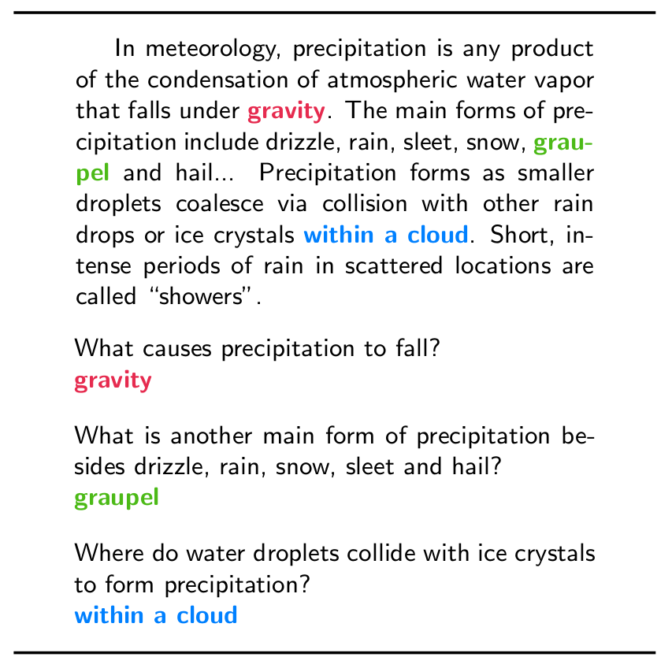
SQuAD由斯坦福大学发布,是行业内公认的机器阅读理解领域的顶级水平测试,在学术界和工业界有着非常高的认可度和广泛的影响力,是阅读理解乃至自然语言处理领域里比较权威的数据集.
SQuAD从维基百科中选取了500篇文章,每篇文章划分成一些段落,每个段落有若干个问题,以此构建了一个包含十万个问题的大规模机器阅读理解数据集,其问题和答案都是让crowdworkers进行人工生成.
SQuAD16年6月发布1.0版本,18年6月发布2.0版本.2.0版本和1.0版本的区别主要在于2.0版本多了很多根据文章无法回答的问题,所以机器需要去判断根据给定的文章能不能回答问题,这也让2.0版本的数据集增加了难度.但从实际应用角度考虑,2.0版本的数据集显然更实用更贴近生产应用实际,机器也需要判断问题能不能回答.
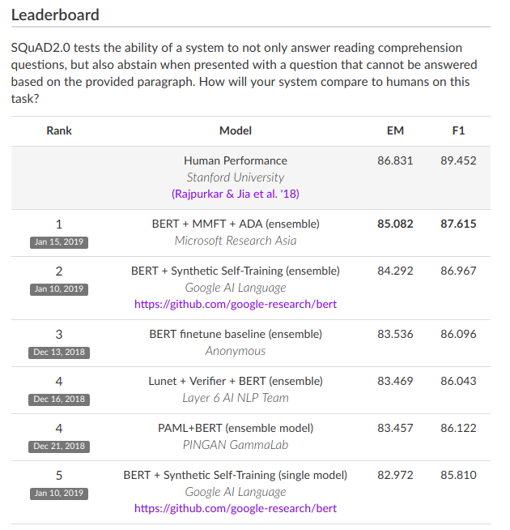
稍后会详细介绍SQuAD数据集,以下是数据集的论文链接:
SQuAD 1.0: SQuAD: 100,000+ Questions for Machine Comprehension of Text
SQuAD 2.0: Know What You Don’t Know: Unanswerable Questions for SQuAD
- Exact match(EM): predicted answer和ground truth之间是否相等
- F1 score: 计算predicted answer和ground truth之间的单词重叠, 有多个答案时计算最大的答案的F1 score再进行平均
$$ F1 = \frac{2 \times Precision \times Recall}{Precision + Recall} $$
1.3.4 综合式
MARCO 数据集中的问题全都基于来自微软必应搜索（BING）引擎和微软小娜人工智能助手（Cortana）的已匿名处理的真实查询.此外,相关回答是由真人参考真实网页编写的,并对其准确性进行了验证.而在每一个问题中,MARCO 提供多篇来自搜索结果的网页文档,系统需要根据这些文档来回答给定的问题.就像人类在搜索引擎给定的结果中自行筛选信息一样,这些文档中是否有对应的答案、在哪一篇文章中,都需要系统自行判断,甚至还需要结合多篇文章做出提炼与总结,而这也对机器的阅读理解能力提出了更高的要求.
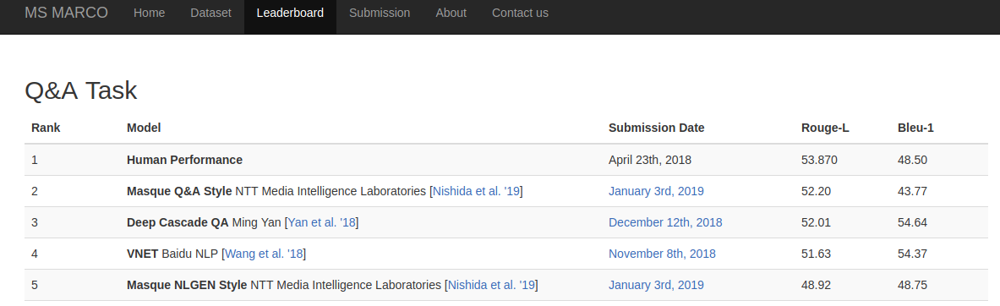
没有一个consensus的评价指标, 用natural language generation (NLG) 的指标例如BLEU, Meteor等代替
1.3.5 对话式
对话式阅读理解数据集主要结合了阅读理解和多轮对话的共同特点, 机器需要去阅读一段文本,并据此回答一系列相关的问题, 这些问题是相关的, 因此需要机器去编码多轮对话之间的联系.
1.3.6 一些数据集的总结
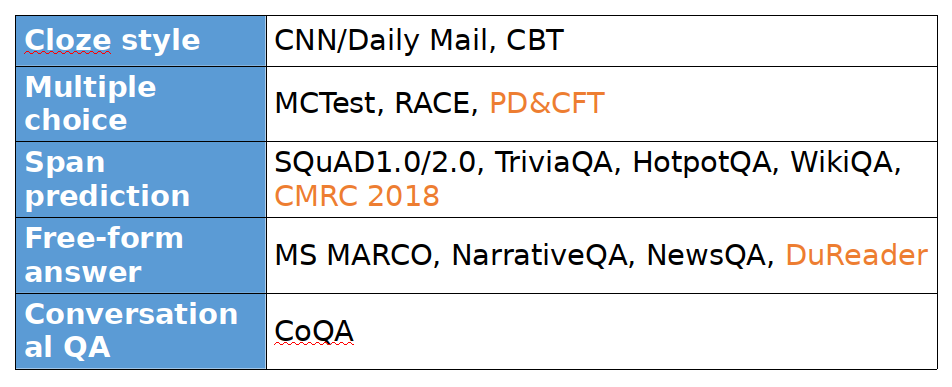
1.4 发展历程
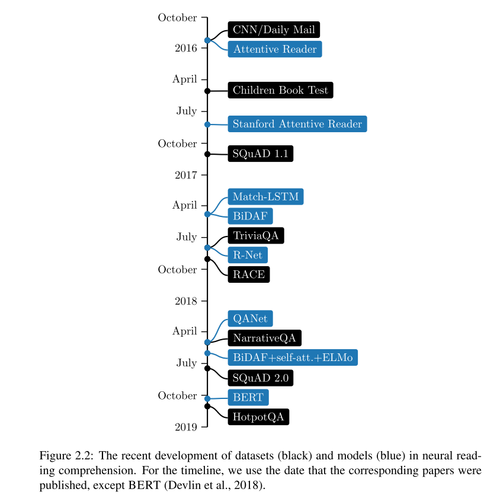
阅读理解领域的发展大致有三个阶段,在早期时,模型大多是传统的语言学系统;2013-2015年间,由于有了 MCTest, PROCESSBANK 等更多的监督学习数据集, 逐渐地过渡到rule-based的机器学习系统,这些系统较强地依赖于设计特征的好坏;2015至今,伴随着深度学习浪潮的到来,阅读理解领域全面由端到端的深度学习模型接管.
最近阅读理解领域的巨大成功主要归功于两点:
- 更大规模更高质量数据集的提出
- 神经网络阅读理解模型的发展
神经网络阅读理解模型相比传统的rule-based模型的优点:
- 神经网络阅读理解模型不依赖于下游的语言学系统或工具例如dependency分析器emantic role labling(语义角色标注)系统等, 这些工具往往有很多不完善的地方并且存在泛化性差等问题,提取出来的特征噪声也会很大.
- 神经网络模型自动学习所有的特征, 而这些特征也很难被手动有效的设计出来, 人们也可以把更多的精力放在设计网络结构上
2. SQuAD
2.1 数据集特点
前文提到过了SQuAD的数据集格式和影响力,下面主要介绍一些数据集的细节和特点.
- 问题(query)的复杂性
因为问题是由人类提出的,而且他们在被要求提出问题时就被要求问题要尽可能复杂并且问题与原文使用的词汇要尽可能不重叠,这导致了回答问题需要一定的推理能力,比如问题和原文中对应答案的段落之间存在词汇替换,这种替换可能是简单的同义词,可能是需要外部知识来理解,也可能出现语法、句式的不同,甚至需要多个句子联合推理等等.
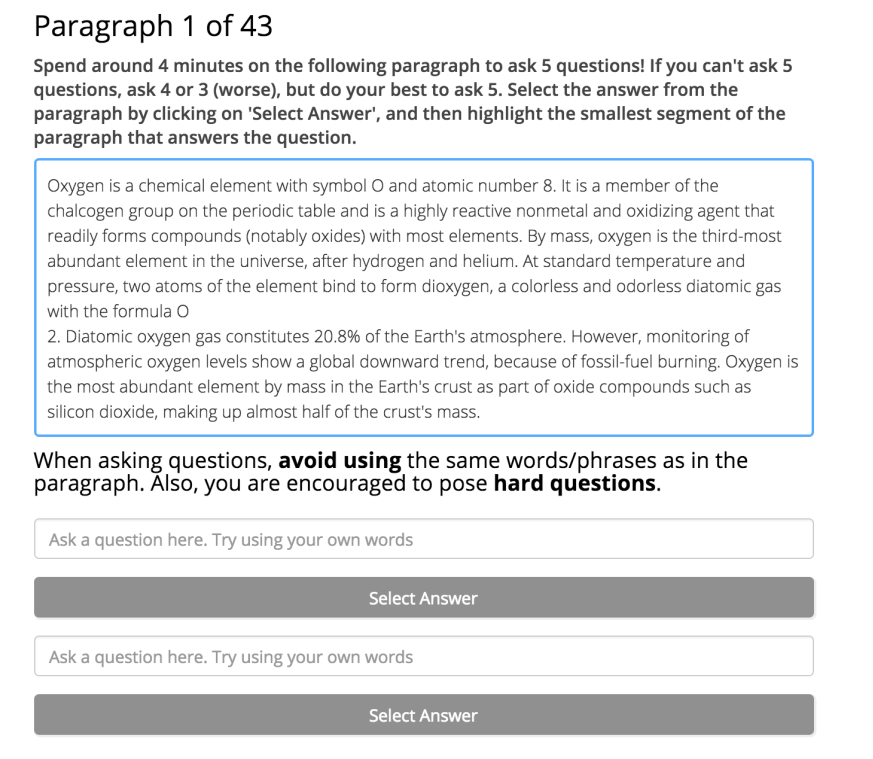
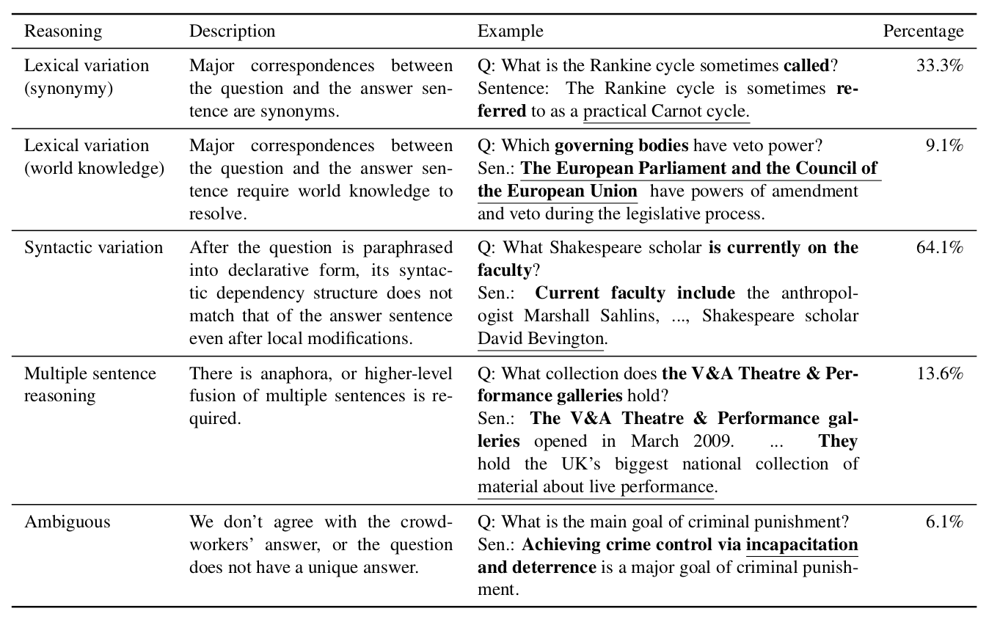
- 答案的多样性
答案是从原文中抽取出来的片段,可能是一个词也可能是多个词,可能是日期、其他数字、人名、地名、名词短语、动词短语等等各种类型,答案的多样性也增加了阅读理解的难度.
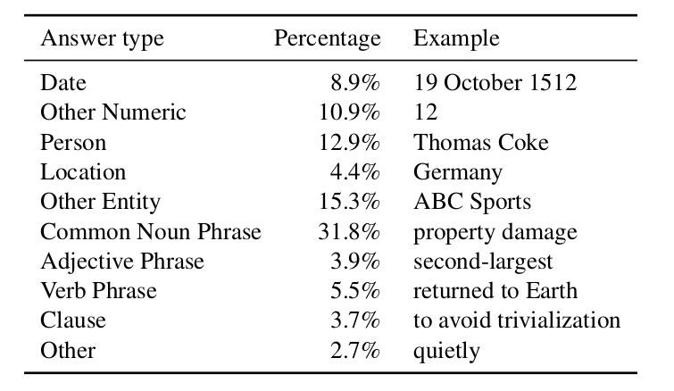
2.2 SQuAD 2.0
SQuAD2.0是在1.0共10w个问题的基础上增加了5w个新的根据上下文没法回答的问题.机器在阅读寻找答案的同时,不仅要判断最可能的位置,还要判断到底问题可不可以被回答,这种改进更符合实际的阅读理解需求但也增加了不少难度.
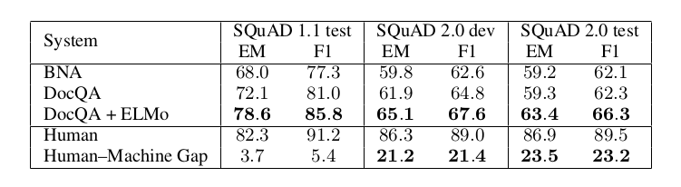
2.3 模型通用架构
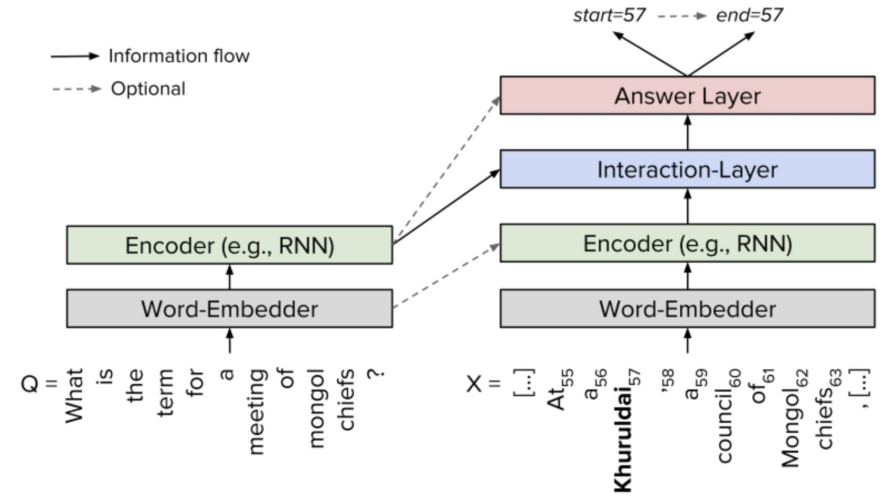
大部分围绕SQuAD的模型架构基本上可以分为四个层,embedding层、encode层、interaction层、answer层.
- embedding层 : 将文章和问题中的tokens映射成向量表示,可以是word层面的embedding,也可以包含character层面的embedding.
- encoder层 : 利用RNN对文章和问题向量进行编码,获得上下文相关的词汇的向量表示.
- interaction层 : 主要利用注意力机制去编码文章和问题向量,捕捉问题和文章之间的交互关系,生成包含了问题语义信息的原文表示.
- answer层 : 基于编码过的文章向量和问题向量来预测答案范围,一般预测答案的start和end两个位置.
2.4经典模型
2.4.1 BiDAF(Bidirectional Attention Flow Model)
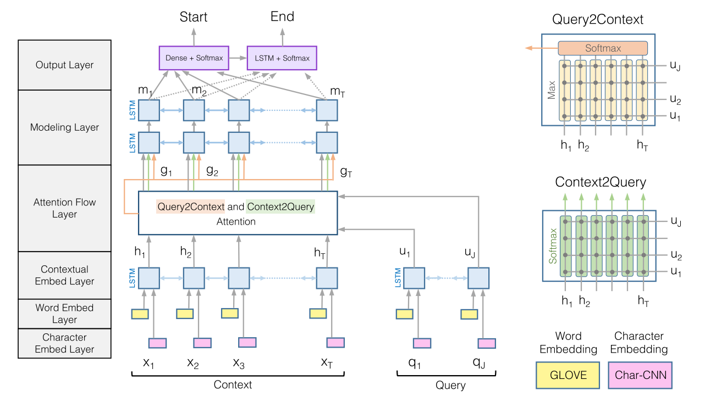
- Character Embedding Layer: 利用CNN获得每个单词的character-level的表示, 对处理out-of-vacabluary的单词会有帮助.
- Word Embedding Layer: 使用Glove预训练词向量获得单词的word-level的表示.
- Contextual Embedding Layer: 使用LSTM对文章和问题分别进行编码,获得基于上下文的单词表示
- Attention Flow Layer: 通过query-to-context和context-to-query的双向注意力计算,获得query-awared的context的表示
- Modeling Layer: 利用LSTM进行进一步的信息融合和建模.
- Output Layer: 通过Dense+softmax获得start位置和end位置的概率.
BiDAF主要的创新点在于利用了static的注意力计算和双向注意力机制, 通过提前利用context和query的向量计算出相似度矩阵,再对矩阵进行行列的概率归一化即可获得双向的注意力.
2.4.2 R-Net
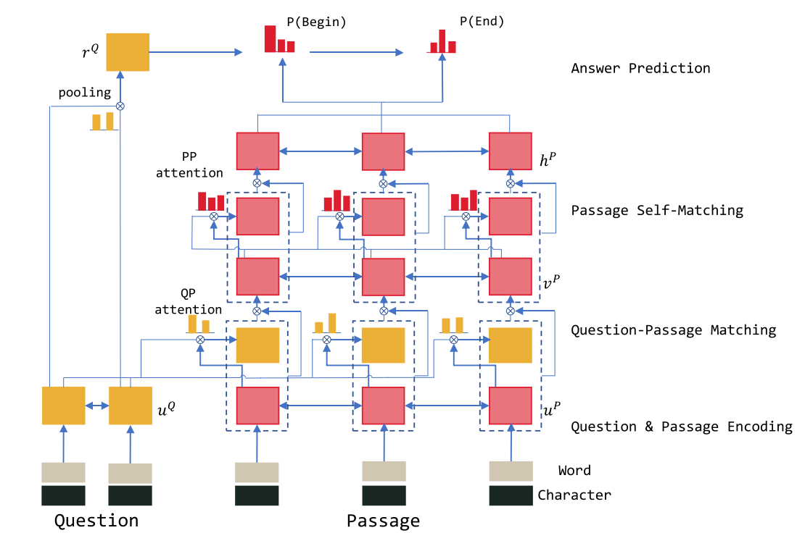
R-Net主要的创新点在于在context-to-query的interaction层之后,又添加了self-attention机制, 来更好地进行长距离的信息匹配和融合.
2.4.3 QANet
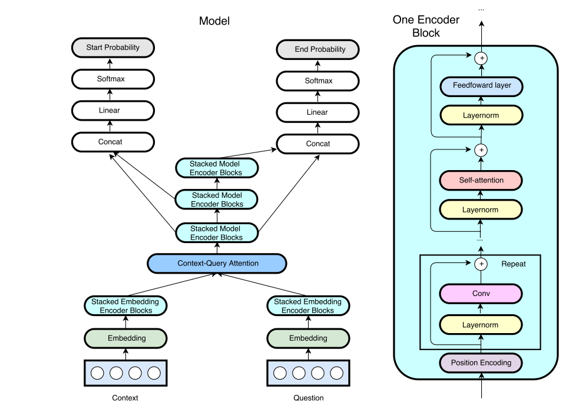
QANet在架构上和其他模型仍是一样的, 它主要是考虑到RNN网络训练和推理的速度都很慢,训练很慢会导致很难快速迭代调优模型和使用更大的数据集,推理很慢影响系统部署到对实时性要求高的场景; 因此,它提出了一种新的encoder block, 利用卷积和self-attention来进行编码,编码器内部的结构组成类似transformer, 不同的是增加了卷积模块.
其主要贡献在于:
- 提出了基于卷积和self-attention的新型编码结构, 替换了RNN, 大大加速了训练过程.
- 提出了一种叫backtranslation的数据增强方法,即把原文翻译成另外一种语言再翻译回来,作为数据增强.
其加速效果如下图所示:
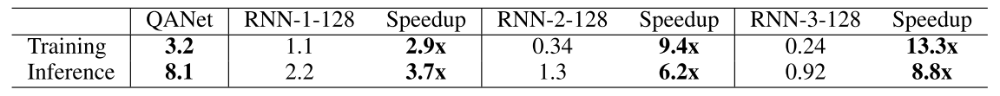
3.参考文献
[1] Richardson M, Burges C J, Renshaw E. Mctest: A challenge dataset for the open-domain machine comprehension of text[C]//Proceedings of the 2013 Conference on Empirical Methods in Natural Language Processing. [S.l.: s.n.], 2013: 193-203.
[2] Chen D. Neural reading comprehension and beyond[D]. [S.l.]: Stanford University, 2018.
[3] Hill F, Bordes A, Chopra S, et al. The goldilocks principle: Reading children’s books with explicit memory representations[J]. arXiv preprint arXiv:1511.02301, 2015.
[4] Hermann K M, Kocisky T, Grefenstette E, et al. Teaching machines to read and comprehend[C]//Advances in Neural Information Processing Systems. [S.l.: s.n.], 2015: 1693-1701.
[5] Lai G, Xie Q, Liu H, et al. Race: Large-scale reading comprehension dataset from examinations[J]. arXiv preprint arXiv:1704.04683, 2017.
[6] Rajpurkar P, Zhang J, Lopyrev K, et al. Squad: 100,000+ questions for machine comprehension of text[J]. arXiv preprint arXiv:1606.05250, 2016.
[7] Rajpurkar P, Jia R, Liang P. Know what you don’t know: Unanswerable questions for squad[J]. arXiv preprint arXiv:1806.03822, 2018.
[8] Nguyen T, Rosenberg M, Song X, et al. Ms marco: A human generated machine reading comprehension dataset[J]. arXiv preprint arXiv:1611.09268, 2016.
[9] Chen D, Bolton J, Manning C D. A thorough examination of the cnn/daily mail reading comprehension task[J]. arXiv preprint arXiv:1606.02858, 2016.
[10] Seo M, Kembhavi A, Farhadi A, et al. Bidirectional attention flow for machine comprehension[J]. arXiv preprint arXiv:1611.01603, 2016.
[11] Xiong C, Zhong V, Socher R. Dynamic coattention networks for question answering [J]. arXiv preprint arXiv:1611.01604, 2016.
[12] Wang W, Yang N, Wei F, et al. Gated self-matching networks for reading comprehension and question answering[C]//Proceedings of the 55th Annual Meeting of the Association for Computational Linguistics (Volume 1: Long Papers): volume 1. [S.l.:s.n.], 2017: 189-198.
[13] Wang S, Jiang J. Machine comprehension using match-lstm and answer pointer[J]. arXiv preprint arXiv:1608.07905, 2016.
[14] Yu A W, Dohan D, Luong M T, et al. Qanet: Combining local convolution with global self-attention for reading comprehension[J]. arXiv preprint arXiv:1804.09541, 2018.
[15] Kim Y. Convolutional neural networks for sentence classification[J]. arXiv preprint arXiv:1408.5882, 2014.
10[16] Devlin J, Chang M W, Lee K, et al. Bert: Pre-training of deep bidirectional transformers for language understanding[J]. arXiv preprint arXiv:1810.04805, 2018.
[17] Joshi M, Choi E, Weld D S, et al. Triviaqa: A large scale distantly supervised challenge dataset for reading comprehension[J]. arXiv preprint arXiv:1705.03551, 2017.
[18] Shen Y, Huang P S, Gao J, et al. Reasonet: Learning to stop reading in machine comprehension[C]//Proceedings of the 23rd ACM SIGKDD International Conference on Knowledge Discovery and Data Mining. [S.l.]: ACM, 2017: 1047-1055.
[19] Weissenborn D, Wiese G, Seiffe L. Making neural qa as simple as possible but not simpler[J]. arXiv preprint arXiv:1703.04816, 2017.
[20] Mikolov T, Sutskever I, Chen K, et al. Distributed representations of words and phrases and their compositionality[C]//Advances in neural information processing systems. [S.l.: s.n.], 2013: 3111-3119.
[21] Pennington J, Socher R, Manning C. Glove: Global vectors for word representation[C]// Proceedings of the 2014 conference on empirical methods in natural language processing (EMNLP). [S.l.: s.n.], 2014: 1532-1543.
[22] Bojanowski P, Grave E, Joulin A, et al. Enriching word vectors with subword infor- mation[J]. Transactions of the Association for Computational Linguistics, 2017, 5: 135-146.
[23] Hochreiter S, Schmidhuber J. Long short-term memory[J]. Neural computation, 1997,9(8): 1735-1780.
[24] Cho K, Van Merriënboer B, Gulcehre C, et al. Learning phrase representation susing rnn encoder-decoder for statistical machine translation[J]. arXiv preprint arXiv:1406.1078, 2014.
[25] Schuster M, Paliwal K K. Bidirectional recurrent neural networks[J]. IEEE Transactions on Signal Processing, 1997, 45(11): 2673-2681.
[26] Sutskever I, Vinyals O, Le Q V. Sequence to sequence learning with neural networks [C]//Advances in neural information processing systems. [S.l.: s.n.], 2014: 3104-3112.
[27] Bahdanau D, Cho K, Bengio Y. Neural machine translation by jointly learning to align and translate[J]. arXiv preprint arXiv:1409.0473, 2014.
[28] Luong M T, Pham H, Manning C D. Effective approaches to attention-based neural machine translation[J]. arXiv preprint arXiv:1508.04025, 2015.
[29] Vaswani A, Shazeer N, Parmar N, et al. Attention is all you need[C]//Advances in 11Neural Information Processing Systems. [S.l.: s.n.], 2017: 5998-6008.